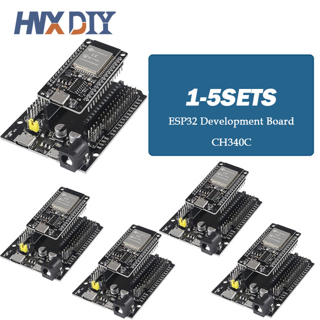
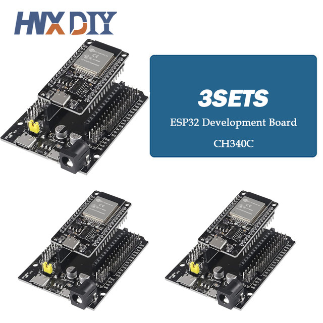
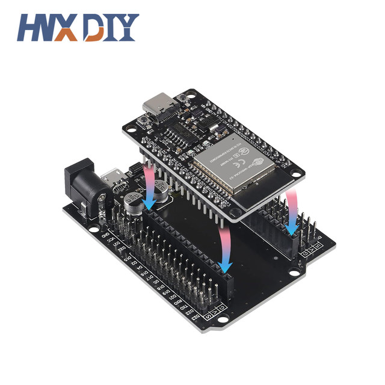
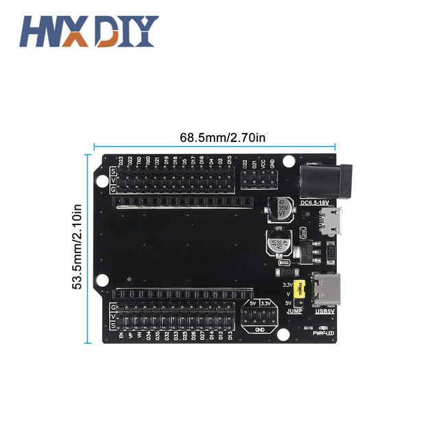
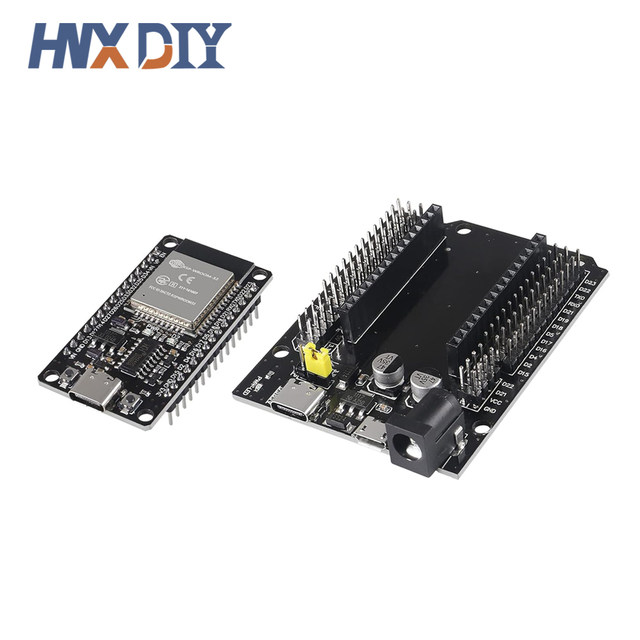
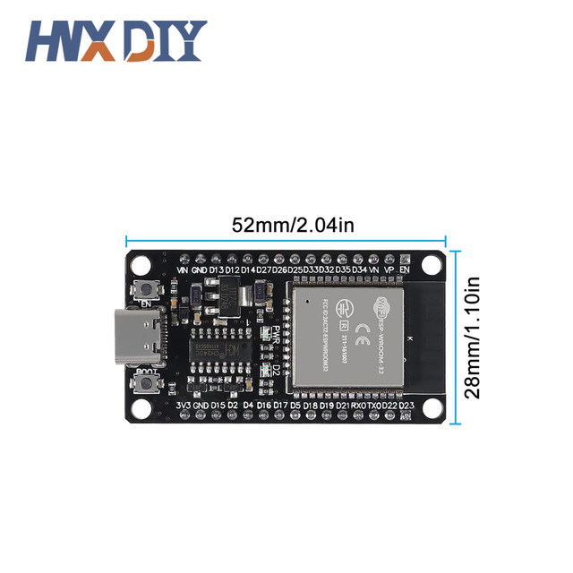
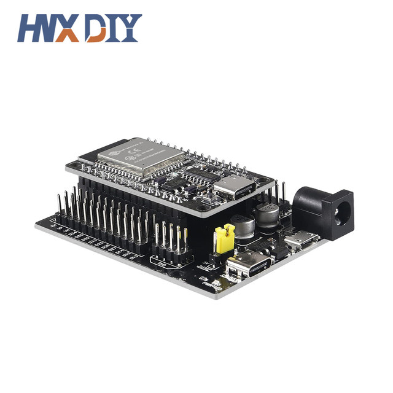

Introduction:
Development board model: ESP32-DevKitC-32
Module model: ESP32-WROOM-32
Main control chip: ESP32-DOWDQ6-V3 dual-core 32bit MCU integrated WiFi, Bluetooth,
Integrated 520-kBSRAM, 448-kBROM16-kBSRAMinRTC
External storage: 4MB
USB driver chip: CH340C, with good system compatibility, higher download speed, and more stability. Support VIN external wide voltage input 5-12V power supply (battery version maximum 5.5V input) Support USB power supply, external 3.3V power supply, and VIN power supply three kinds of power supply Mode development board size: 52*28mm/weight about 9.5g
Support ArduinoIDE mixly, mind+, Python and other programming software






